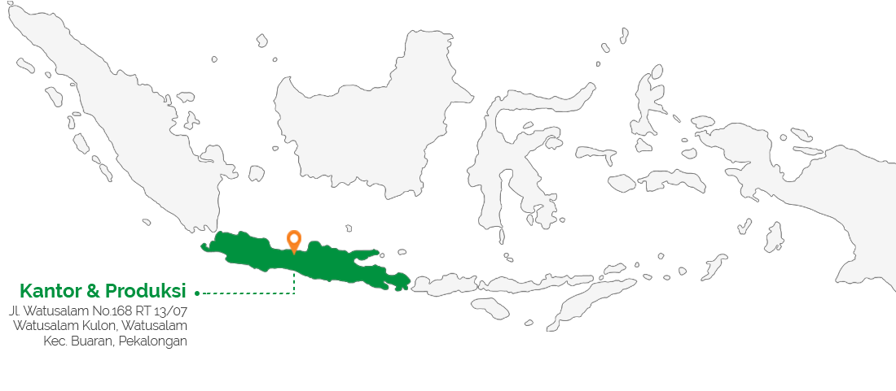

Tentang Kami
Tentang Kami
Berawal dari sepasang suami istri asal Kota Pekalongan yang memiliki mimpi untuk bisa menciptakan kain batik berkualitas, pada akhir tahun 1980an, didirikanlah usaha produksi kain batik printing dengan nama CV Argo Peni. Awalnya hanya memproduksi motif batik tradisional, kini terus berkembang untuk memproduksi motif batik modern dan berbagai macam motif tekstil lainnya. Konsistensi, komitmen, dan integritas selalu menjadi kunci utama dalam berkembangnya bisnis ini. Setelah berhasil melewati berbagai macam krisis yang dialami perusahaan, pada tahun 2006, mereka mendirikan PT Kusuma Kencana Mulya (KKM) dengan visi untuk menjadi perusahaan tekstil terintegrasi paling terpercaya dan paling dicari di Indonesia. Hingga kini, PT Kusuma Kencana Mulya terus berkembang menjadi lebih baik lagi
Tentang Kami
Visi & Misi
Visi
Menjadi perusahaan tekstil terintegrasi paling terpercaya dan paling dicari di Indonesia.
Misi
Mengutamakan kepuasan pelanggan dengan menyediakan produk dan servis dengan kualitas terbaik.
Menyediakan dan memelihara lingkungan kerja yang kondusif dan supportif untuk seluruh karyawan.
Melakukan inovasi dan perbaikan secara terus-menerus guna memberikan nilai tambah bagi seluruh pemangku kepentingan.
Tentang Kami
Area Operasional

Tentang Kami
Nilai Perusahaan
Peduli
Adanya rasa memiliki dan peduli tidak hanya pada sesama karyawan dan perusahaan, tetapi juga pada seluruh pemangku kepentingan.
Penuh andalan
Memiliki performa yang baik secara konsisten serta dapat dipercaya.
Berintegritas
Jujur dan memiliki nilai moral yang baik.
Meritokrasi
Memilih orang - orang berdasarkan kemampuan mereka.